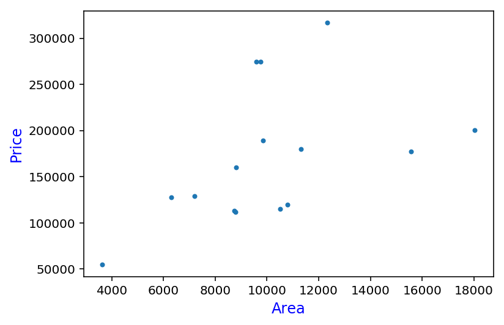
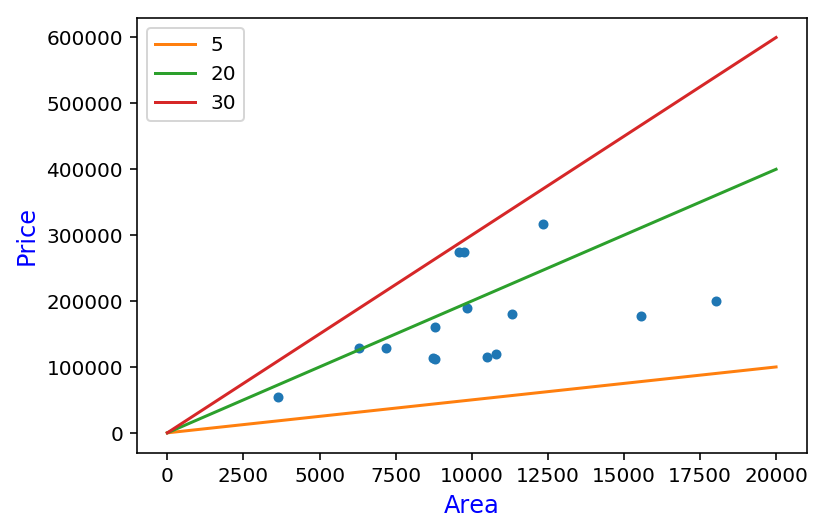
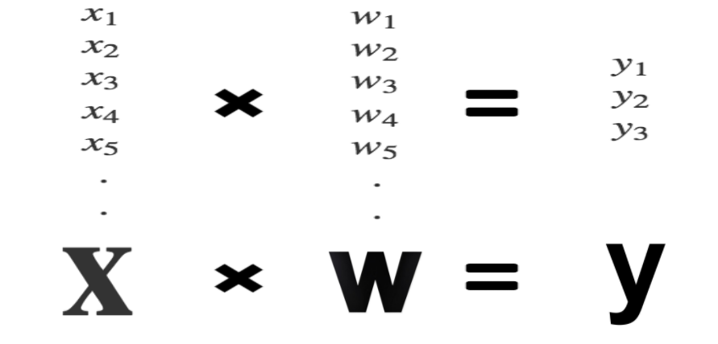
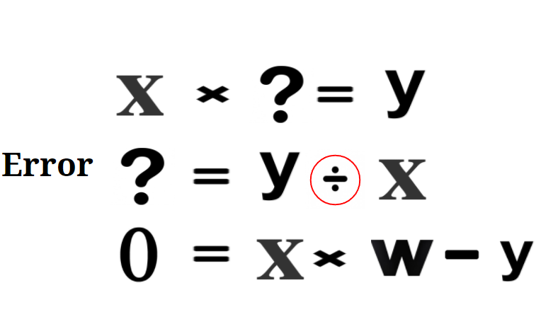
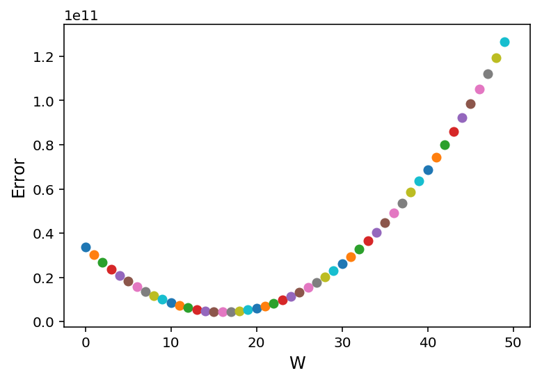

In this post, I am going to
import numpy as np
import pandas as pd
import matplotlib.pyplot as plt
%matplotlib inline
%config InlineBackend.figure_format = 'retina'
house_price = pd.read_csv('data/house_price_train.csv')
house_price = house_price[['LotArea', 'SalePrice']]
plt.plot(house_price['LotArea'], house_price['SalePrice'], '.')

# To make it easier to understand, I pull out 15 random houses,
# we will use these house only for this post
sample_data = house_price.sample(15, random_state=3)
plt.plot(sample_data['LotArea'], sample_data['SalePrice'], '.')
plt.xlabel('Area', fontsize=12, color='blue')
plt.ylabel('Price', fontsize=12, color='blue')

# Simple function to draw lien
def graph(formula, x_range):
x = np.array(x_range)
y = eval(formula)
plt.plot(x, y)
3 lines represent 3 different prediction models
as we can see, green is the best fit line out of 3. we can tell green line fits best by instict, but how did we know? why not red line or even yellow?
# Check out our naive prediction line
plt.plot(sample_data['LotArea'], sample_data['SalePrice'], '.', markersize=8, label='_nolegend_')
plt.xlabel('Area', fontsize=12, color='blue')
plt.ylabel('Price', fontsize=12, color='blue')
graph('5*x', range(0, 20000))
graph('20*x', range(0, 20000))
graph('30*x', range(0, 20000))
plt.legend(['5', '20', '30'])
 —
What we are trying to do in Machine Learning
If we know the ‘W’ we can predict ‘y’ value when we have ‘X’ value. problem is multiplication does not have inverse, so we move y value to the right side and keep the left side as 0. Now we find ‘W’ that make smallest ‘Error’
 
See actual example
plot shows sum of errors on 15 house prices for each ‘W’ from 0 to 50 as you can see error starts from around 200k, hits zero, and goes down to -200k
# Check the error based on W
plt.xlabel('W', fontsize=12)
plt.ylabel('Error', fontsize=12)
for w in range(0, 50):
predict = w * sample_data['LotArea']
error = np.mean(sample_data['SalePrice'] - predict)
plt.scatter(w, error)
Negative Error?
Negative error does not make sense, it happens when our predict house price was bigger than actual price. to solve this problem, simply we square the error, aka MSE(Mean Squared Error)
# Check the squared error based on W
plt.xlabel('W', fontsize=12)
plt.ylabel('Error', fontsize=12)
for w in range(0, 50):
predict = w * sample_data['LotArea']
error = np.mean((sample_data['SalePrice'] - predict)**2)
plt.scatter(w, error)
